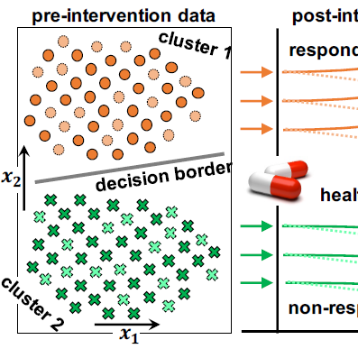

Igor Kulev
I am passionate about applying machine learning to real-world problems.
Experience
Researcher
Extract and analyze time-series data obtained from fitness trackers. Analyze trial data. Develop novel machine learning methods to recommend personalized interventions. Prepare deliverables, reports and presentations. Organize Data Analytics workshop. Develop a mobile app to promote physical activeness.
Doctoral Assistant
École Polytechnique Fédérale de Lausanne
Conduct research on personalizable intervention systems to promote healthy behavior change. Design, implement and evaluate different machine learning models. Participate in teaching courses: Information, Computation and Communication; Intelligent Agents; and Human Computer Interaction. Supervise student projects. Maintain and manage servers.
Teaching and Research Assistant
Ss. Cyril and Methodius University of Skopje
Participate in teaching courses: Algorithms and data structures; Advanced Algorithms; Intelligent User Interfaces; Intelligent Information systems; Multimedia Systems; Computer architecture and organization. Prepare teaching materials. Conduct research on collaborative health-care systems.
IT Consultant
Design and implement a web-based questionnaire with complex questionnaire flow.
Summer Student Intern
Simulate the behavior of antihydrogen atoms under static magnetic and temporary varying electric fields.
Education
École Polytechnique Fédérale de Lausanne
Ss. Cyril and Methodius University in Skopje
Ss. Cyril and Methodius University in Skopje
Online Courses
| Algorithms: Design and Analysis, Part 1 This course teaches fundamental principles of algorithm design. |
|
| Deep Learning This tutorial teaches the main ideas of unsupervised feature learning and deep learning. |
|
| Game Theory This course teaches the basics of game theory: representing games and strategies, the extensive form, Bayesian games, repeated and stochastic games, etc. |
|
| Game Theory II: Advanced Applications This course teaches how to design interactions between agents in order to achieve good social outcomes. |
|
| Spark This course teaches how to use Spark to work with big data and build machine learning models at scale, including how to wrangle and model massive datasets with PySpark. |
|

|
Python This micro-course teaches Python. |

|
Pandas This micro-course teaches how to manipulate and analyze data. |

|
Intro to Machine Learning This micro-course teaches the core ideas in machine learning. |

|
Intermediate Machine Learning This micro-course teaches how to handle missing values, non-numeric values, data leakage and more. |

|
Feature Engineering This micro-course teaches how to extract features from raw data. |
| The HackerRank Interview Preparation Kit This kit consists of a set of algorithmic problems organised around core concepts commonly tested during interviews. |
Skills
- Python
- Java
- Matlab
- SQL
- C
- C++
- C#
- JavaScript
- Tensorflow
- Scikit-learn
- Pandas
- PySpark
- Flask
- Amazon Web Services
- Microsoft Visual Studio
- Eclipse
Projects
| Movie Suggestions New Developed a web site that recommends movies based on keywords. The app uses machine learning to understand which keywords are related to each other and which movies are related to which keywords. Recurrent Neural Network Recommender System Information Retrieval Website Crawling Data linking Tensorflow Back-end Flask Java Front-end JavaScript jQuery Deployment Amazon Web Services |
| Smart Compose Collected data and developed a sequence-to-sequence model to offer relevant and real-time suggestions as you type. The model was inspired by Gmail Smart Compose. Implemented a fast beam-search algorithm and developed a web site to achieve a real-time inference. Sequence-to-Sequence Recurrent Neural Network Natural Language Processing Language Modeling Website Crawling Tensorflow Back-end Flask Java Front-end JavaScript jQuery Deployment |
| HealthyTogether Developed a machine learning model to predict behavior change under different interventions. Integrated the model into a mobile app to promote physical activeness. The app was used in an experimental study. Collected data and analyzed the results of the study. Recommender System Back-end Flask Deployment Tensorflow |
| Reducing Intervention Bias using Adversarial Balancing Developed a novel adversarial approach to reduce bias when estimating the intervention effect from observational data. Demonstrated that this approach performs better than the existing approaches on a widely-used benchmark dataset. Causal Inference Observational Data Intervention Bias Adversarial Learning Representation Learning Deep Neural Network Individualized Treatment Effect Tensorflow |
| Personalizable Intervention System for Senior Adults Proposed a novel intervention system to promote physical activeness in senior adults. The system uses minute-by-minute step count data to recommend a mobile app intervention that is most likely to work for the target user based on his or her activity patterns. Recommender System Randomized Trial Supervised Learning Autoencoder Representation Learning Time Series Causal Inference Tensorflow |
| Discovering Intervention Profiles From Time Series Data Proposed a novel method to discover and predict behavior change patterns from frequently-sampled sensor data. Demonstrated that the system produces explainable patterns that may be used to recommend strategies for healthy behavior change. Recommender System Time Series Behavior Patterns Behavior Change Patterns Mixture Model Representation Learning Latent Variable Model Tensorflow Matlab |
|  | Intervention-Based Clustering Proposed a Bayesian mixture model to identify subpopulations with different behavior changes from longitudinal data. Showed that the model can discover the subpopulations that respond to the intervention from a limited amount of data. Bayesian Mixture Model Clustering Latent Variable Model Longitudinal Data Randomized Controlled Trial Heterogeneous Treatment Effect Subgroup Analysis Matlab |
Selected Publications
Interests
Apart from being a data scientist, I like hiking — I enjoy exploring the Swiss mountains and lakes. Also, I like watching mystery, thriller and comedy genre movies and television shows.
Achievements & Awards
- Award "Engineering ring" given by the Engineering Institution of Macedonia. The best engineering student of generation 2010/2011.
- Award "Gold coin" given by the Ss. Cyril and Methodius University in Skopje. The best student of generation 2010/2011
- Graduated with Honours, BSc. Eng., Degree, Faculty of Electrical Engineering and Information Technology, Ss. Cyril and Methodius University in Skopje
- 4th place and winners of Region 8 (Europe, Middle East and Africa) at IEEEXtreme 6.0 programming competition (2012)
- 1st place at CodeFu 2012 programming competition
- 7th place at IEEEXtreme 5.0 programming competition (2011)
- 1st place at National ACM-ICPC contest for algorithmic programming (2009 and 2010)
- 13st place at ACM South Eastern Europe Contest 2009, Romania
- Johnson Controls fellowship (2007-2011)
- Participation at International Olympiad in Informatics 2007, Croatia
- 1st place at Macedonian Olympiad in Informatics 2007
- 3rd prize at National Competition in Mathematics 2006
- 2nd prize at National Competition in Physics 2005